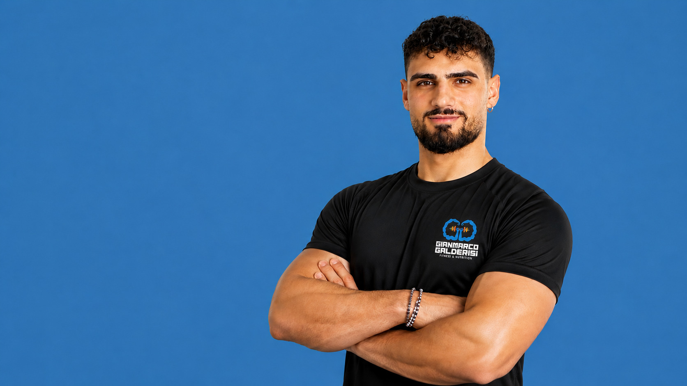
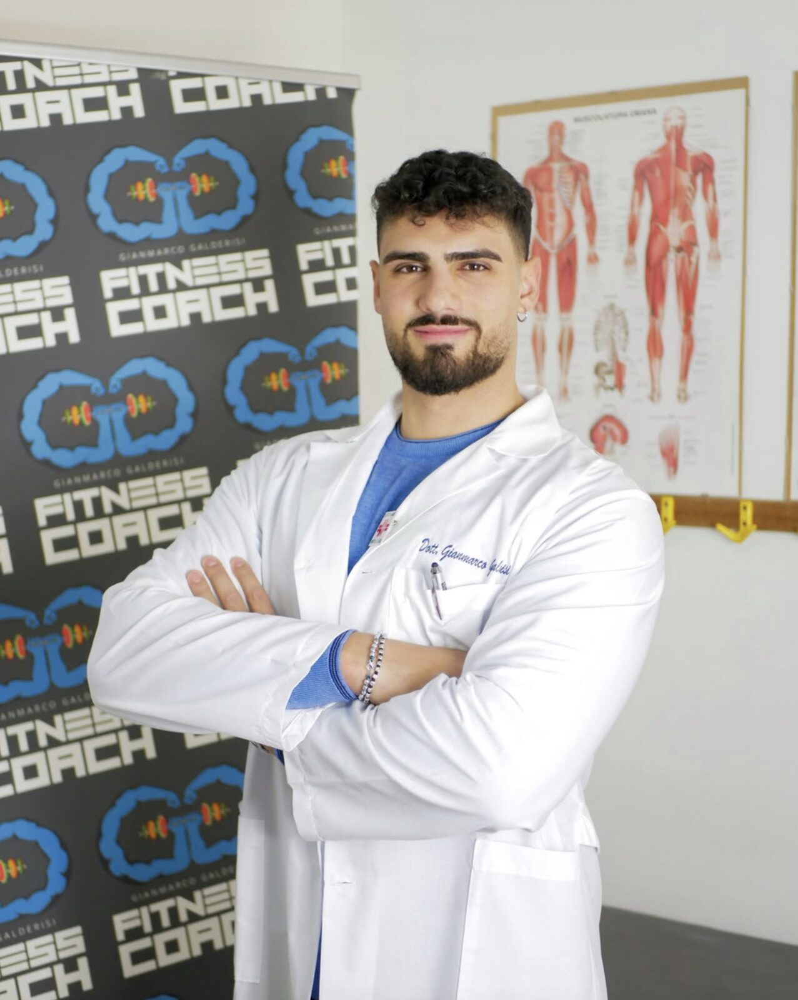
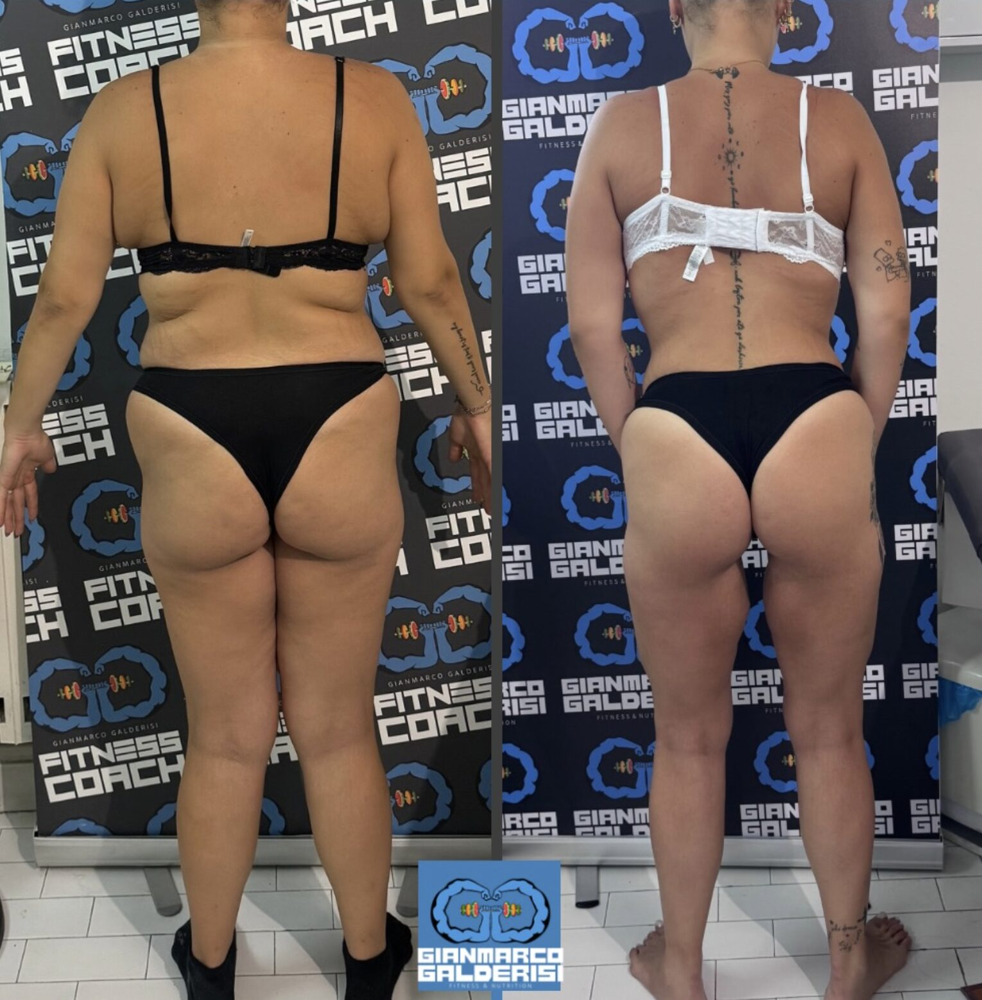
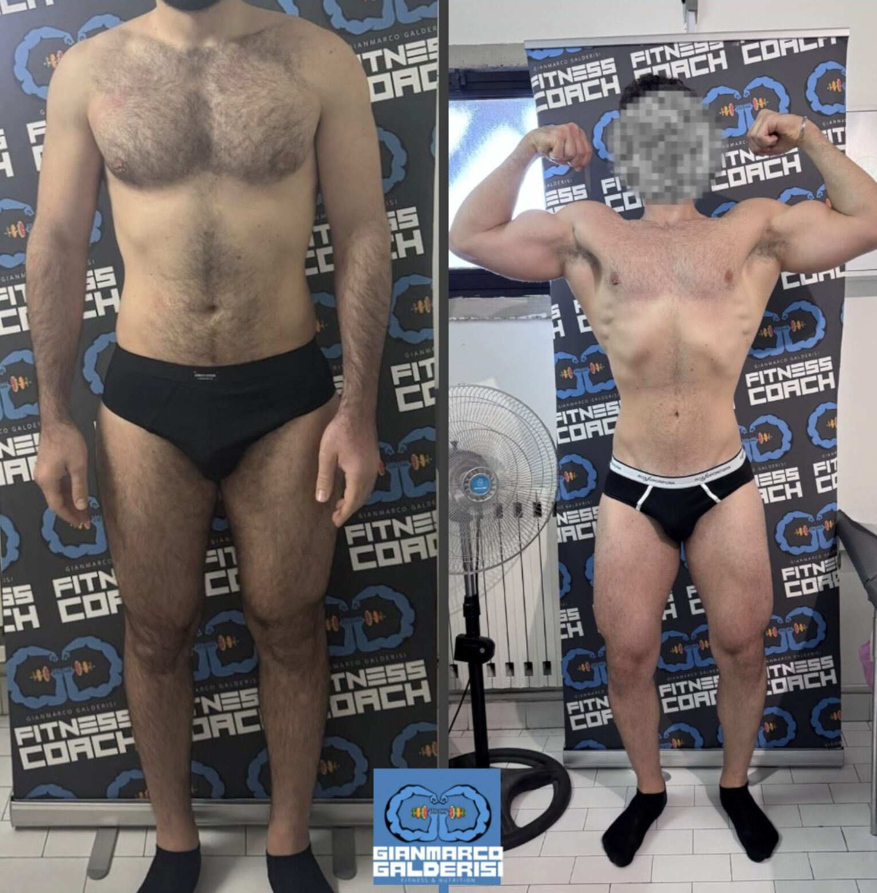
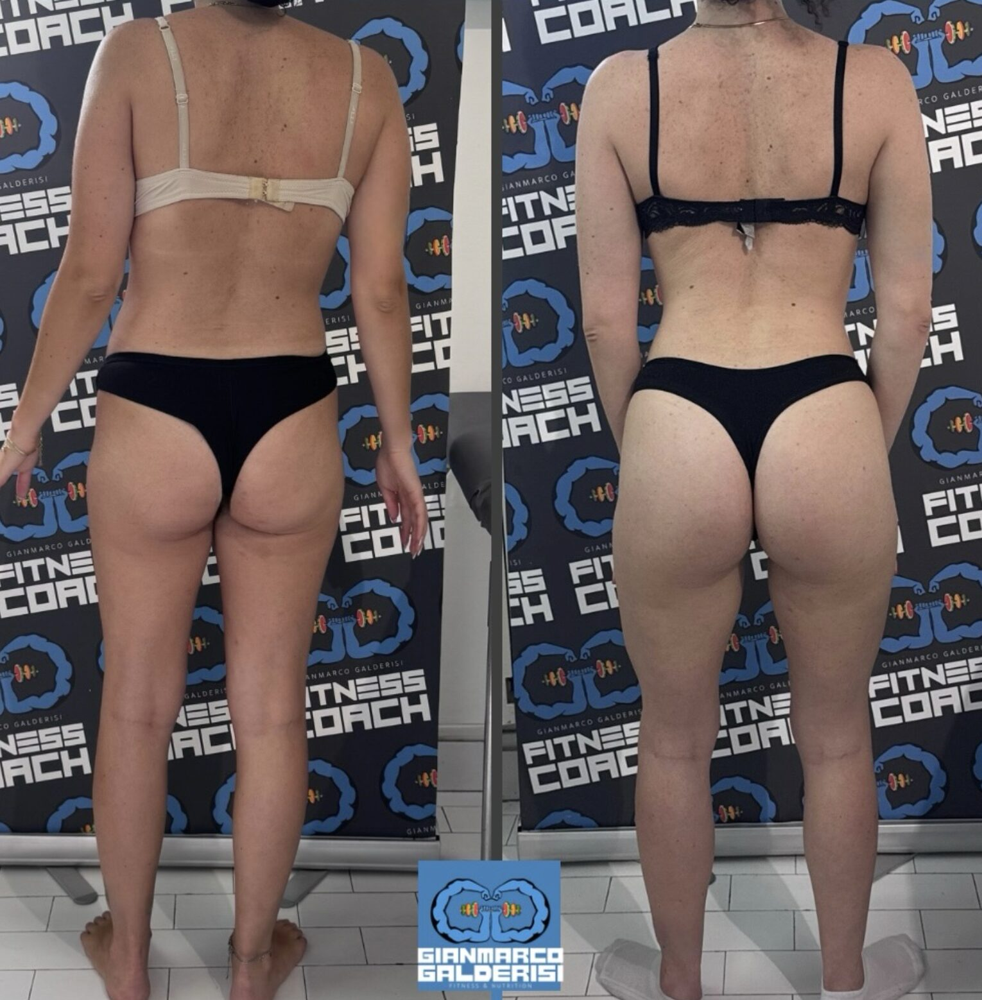
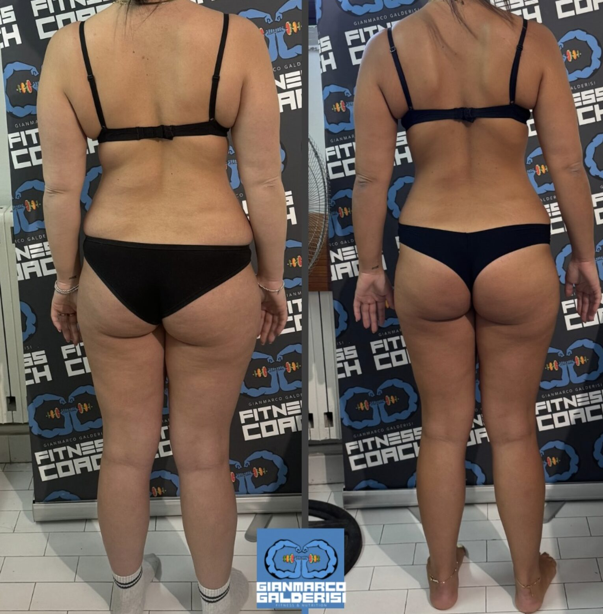
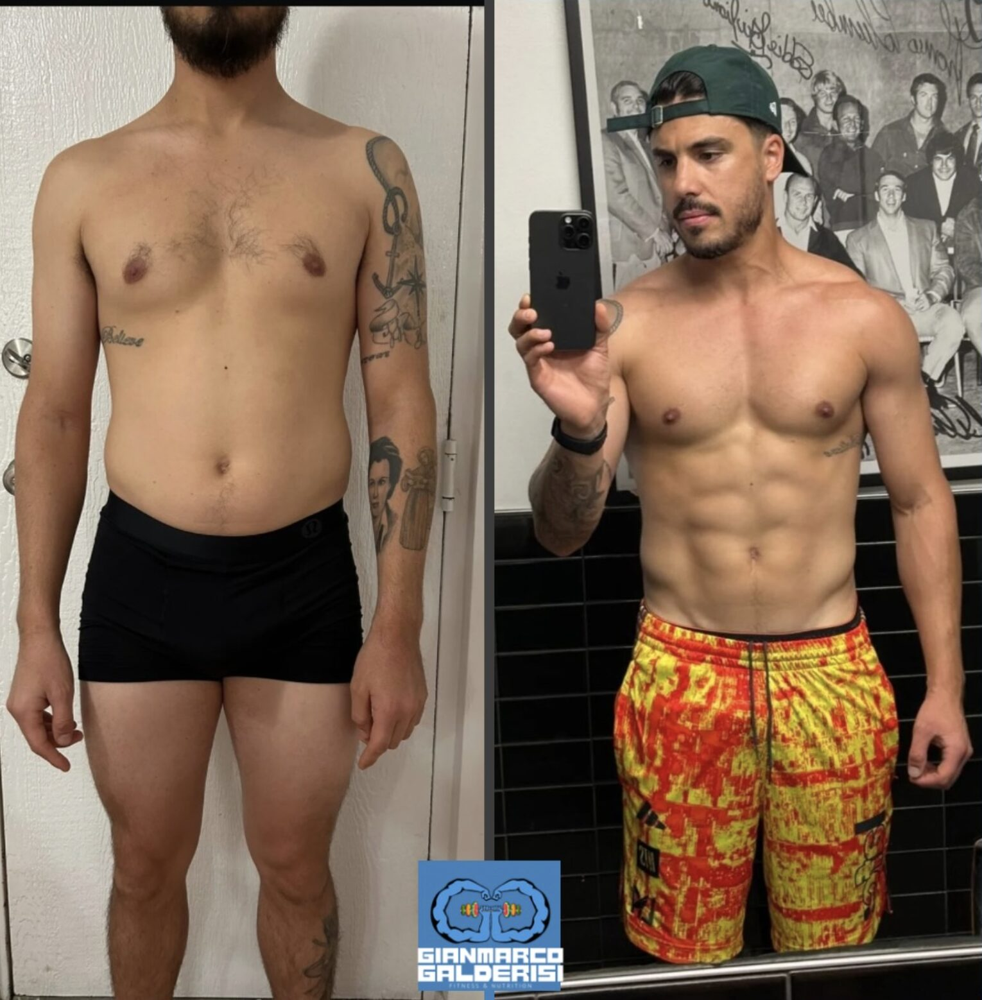

L'allenamento vero, cucito su di te. Nutrizione sostenibile, non diete drastiche. Un percorso unico, non uno standard.

Ti diranno che hai 4 ernie discali e non puoi allenarti in palestra, vorranno trasformarti in un pesce gettandoti in una piscina. Io lavoro diversamente: ascolto, guido, e ti rendo forte.
"Non c'è strada diversa dal rinforzo. Il miglioramento estetico è solo una conseguenza di tanti altri enormi passi che abbiamo fatto."
Il mio approccio unisce biologia della nutrizione e scienza dell'allenamento: due discipline che, se separate, funzionano poco. Non c'è nutrizione che tenga se i muscoli non li stimoli, e non c'è allenamento che regga senza un piano alimentare costruito sulla persona che hai davanti — non su uno standard.
Lavoro con chi vuole risultati veri e duraturi: postura, tono muscolare, forza, salute della schiena. La bilancia è solo un numero: quello che conta è il corpo nuovo che costruiamo insieme, settimana dopo settimana.
Non esistono schede standard. Ogni percorso parte da un'analisi preliminare reale: obiettivi, stile di vita, livello attuale, storia clinica. Da lì costruiamo un piano che è veramente tuo — mai copiato, mai preconfezionato.
Le due discipline lavorano insieme, mai separate: allenamento pesante per costruire forza, tono e postura, e nutrizione flessibile per sostenerlo nel tempo, senza sacrifici impossibili. Passa il mouse sulle due schede per scoprire come lavoro in ciascun ambito.
Cose fatte bene, cucite sulla persona e ripetute nel tempo.
Mangia bene, senza stravolgere la tua routine.
Cosa mi sentirai ripetere lavorando insieme...
Qual è il mio peso forma? Ma cosa te ne frega — 7 mesi di lavoro per ritrovarsi sulla bilancia lo stesso peso? Per fortuna, con un corpo nuovo: nuova postura, nuova schiena, nuovo tono.
Pulire, proporzionare ed elevare. Come sempre il focus sull'allenamento, quello pesante — quello fatto di cose fatte bene, cucite sulla persona e ripetute nel tempo.
Non c'è nutrizione che tenga se i muscoli non li stimolate. Smettila di perdere tempo e rendi produttivi i tuoi sforzi.
Puoi dedicarti del tempo o trovare scuse. Ci separano anche 10.000 km, ma lavoriamo a stretto contatto: feedback costanti, piccole modifiche per grandi risultati.
Ogni trasformazione qui sotto è il risultato di mesi di allenamento costante e nutrizione costruita sulla persona.

Ti diranno che hai 4 ernie discali e non puoi allenarti in palestra, vorranno trasformarti in un pesce gettandoti in una piscina. Tu affidati a qualcuno che sappia ascoltarti, guidarti e renderti forte. Non c'è strada diversa dal rinforzo: il miglioramento estetico è solo una conseguenza di tanti altri enormi passi che abbiamo fatto.

Pulire, proporzionare ed elevare. Come sempre il focus resta sull'allenamento, quello pesante: cose fatte bene, cucite sulla persona e ripetute nel tempo. Il miglioramento estetico è solo la conseguenza di tanti altri passi fatti insieme.

Qual è il mio peso forma? Ma cosa te ne frega. Sette mesi di lavoro non si misurano su una bilancia. Si misurano in un corpo nuovo: una nuova postura, una nuova schiena, un fisico che finalmente risponde a ciò che chiedi.

Su soggetti con poca massa muscolare l'allenamento svolge un ruolo fondamentale. In questi casi la dieta da sola fa ben poco. L'aumento della massa muscolare — alias aumento del tono muscolare, per le "muscolofobiche" — è fondamentale per una resa estetica piacevole: siamo sulla strada giusta.

Puoi dedicarti del tempo, o trovare scuse. Davide ha famiglia e un giorno ha deciso di riscoprirsi atleta — prima nella testa, poi nel fisico. Ci separano più di 10.000 km, ma lavoriamo a stretto contatto: feedback costanti, piccole modifiche per grandi risultati. Corsa, calcio, palestra: inarrestabile.
Ero già stata paziente qualche anno fa ma solo per l'alimentazione. Con l'allenamento incluso il percorso è completamente diverso: risultati che non pensavo possibili.
Finalmente un percorso costruito su di me e non su uno schema fisso. Feedback costanti, correzioni sugli esercizi, e un piano alimentare che riesco davvero a seguire.
Ho smesso di rincorrere il numero sulla bilancia. Il corpo è cambiato, la postura è cambiata, e per la prima volta mi sento davvero forte.
Scrivimi direttamente su WhatsApp per una prima valutazione: obiettivi, livello attuale, e come possiamo costruire insieme un piano che è veramente tuo.
Scrivimi su WhatsApp